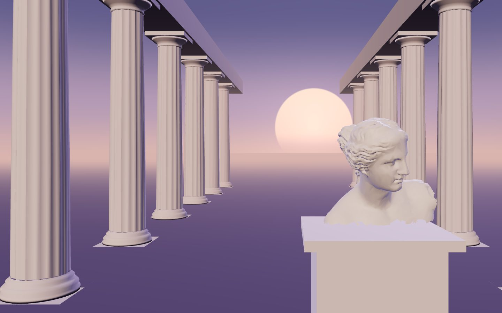

ComfyMind
Un lugar tranquilo para crear
Tómate tu tiempo. Aquí no hay una forma correcta de hacerlo.
3D isn’t available on this device, so a still image is shown instead.

ComfyMind
Tómate tu tiempo. Aquí no hay una forma correcta de hacerlo.
3D isn’t available on this device, so a still image is shown instead.